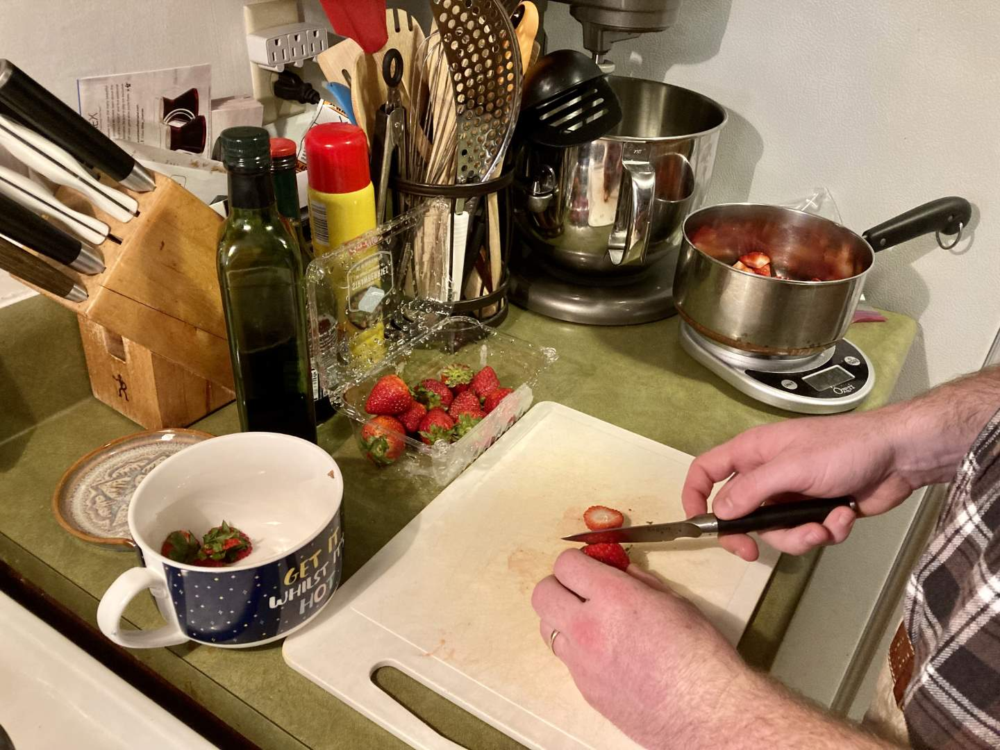
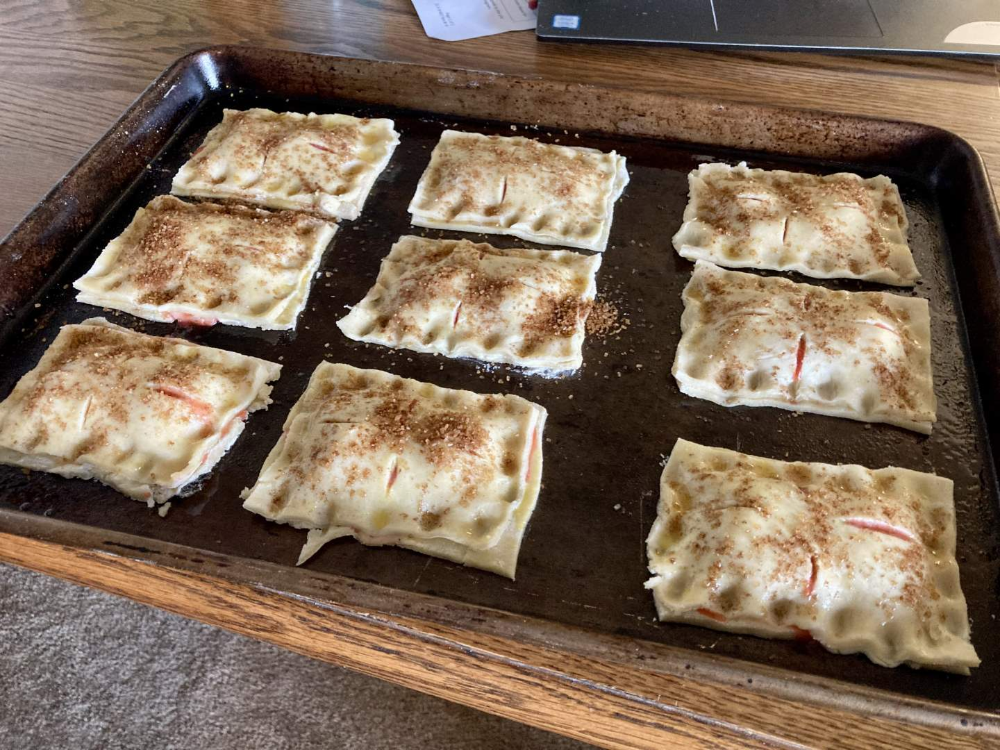

Pie 13: Strawberry Hand Pie
2023-09-20Recipe from King Arthur Baking.
Taste:
Difficulty:
Vibes:
Suggested pairing: baked ziti, garlic bread, salad
Last week’s Shaker lemon pie was a risk. A swim without a lifeguard. This week we wanted a safer pie recipe. One we could serve to guests without fear of it proving mediocre. Turns out, strawberry pie fits that description and Katie Beth had bought some on-sale strawberries.
Now, the fact that strawberry pie filling is a known quantity did not stop me from deciding to branch out a bit with the delivery method--rectangular hand pies.
Making the crust first, I realized the recipe was calling for an abnormally large butter-to-flour ratio. It was a harbinger of flaky and delicious things to come!
The filling was simple (but in no way deficient) with only berries and lemon juice as flavoring agents.
Plopping filling onto the crust rectangles and sealing on the tops was very satisfying. Making sealed packages of food is widely regarded as great fun, as anyone who has seen Crazy Rich Asians should know.

Due to the high butter content of the crust, I decided to refrigerate the sealed pies for about 15 minutes before baking. The recipe didn’t call for it, but I have had pastries in the past leak butter all over the pan. Many recipes for puff pastry call for this chilling period. In this case, it either worked or was unnecessary.
The final product looked wonderful and did not disappoint. Everyone enjoyed these hand pies and I strongly recommend the recipe.